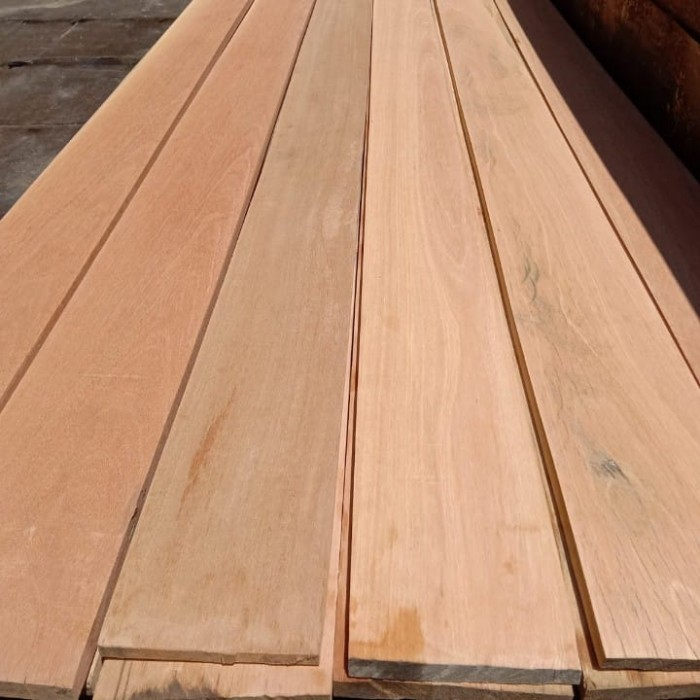
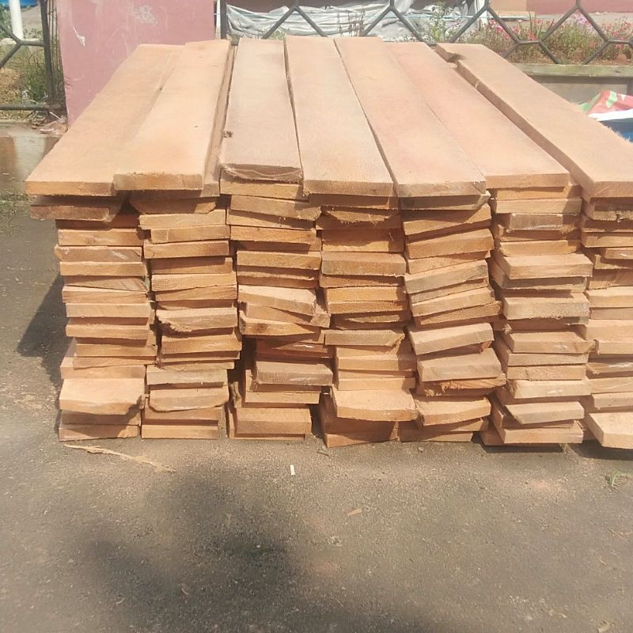
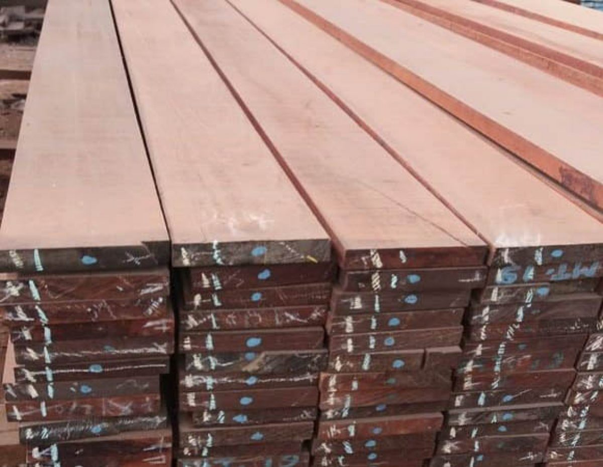
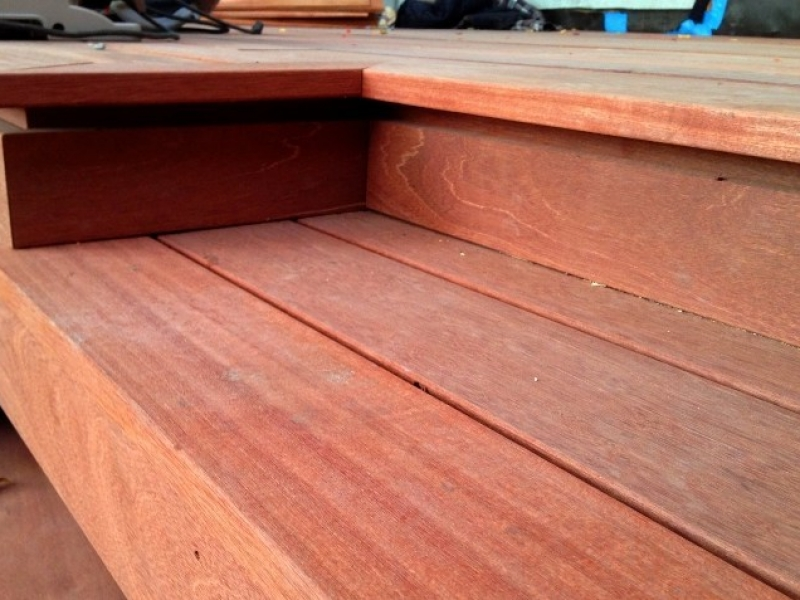
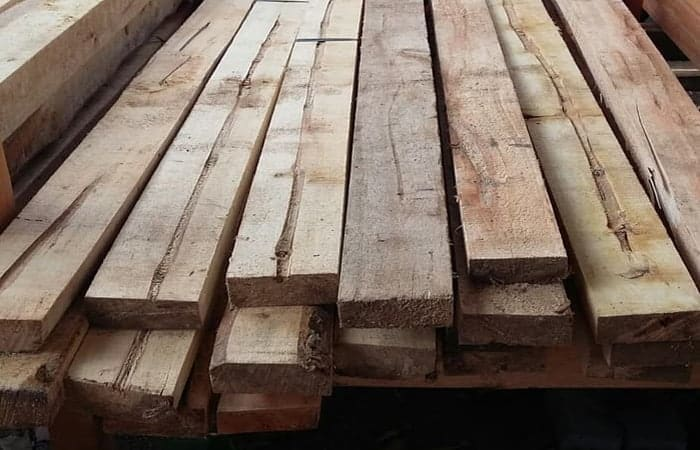
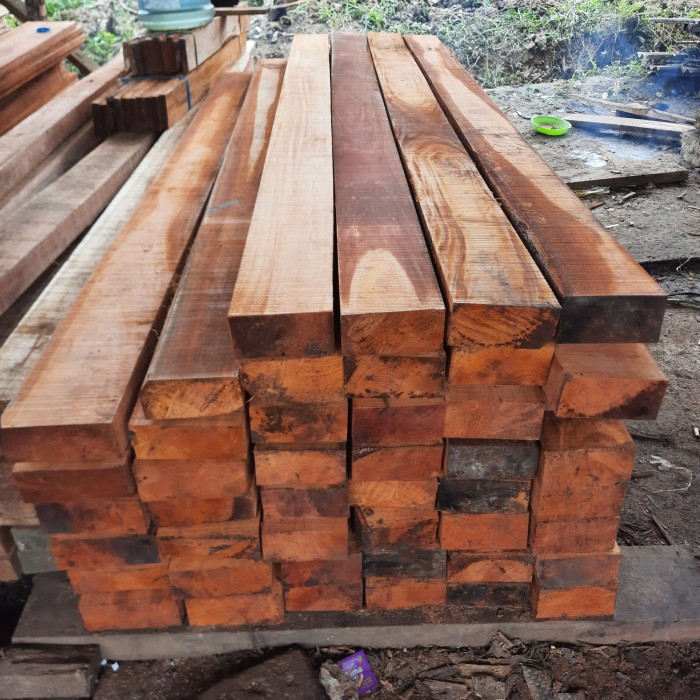
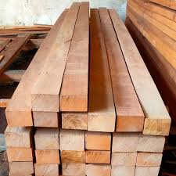

Produk
Kami menawarkan berbagai macam produk kayu berkualitas untuk memenuhi
kebutuhan Anda, mulai dari kayu konstruksi hingga material dekorasi.
Setiap produk kami dipilih dengan cermat untuk memastikan kualitas dan
ketahanan terbaik.
.jpeg)
Kayu Jati
Kayu yang berwarna cokelat agak kekuning-kuningan, banyak ditemukan
di pulau Jawa atau Sulawesi, dan memiliki tingkat awet kelas I. Kayu
jati cocok untuk struktur tiang penyangga, mebel, dan furniture.
.jpeg)
Kayu Sonokeling
Kayu yang memiliki tingkat kekerasan kelas I, warna dan tekstur
menarik, tahan serangga dan jamur, serta tahan perubahan cuaca. Kayu
sonokeling cocok untuk mebel dan furniture.

Kayu Bengkirai
Kayu yang memiliki tingkat awet kelas II dan tingkat kekerasan kelas
I, serta tahan perubahan cuaca. Kayu bengkirai cocok untuk atap
kayu, decking, dan pagar rumah.

Kayu Kelapa
Kayu yang memiliki tingkat kekerasan kelas II–III, estetis, tetapi
kualitas kayunya buruk dan serat tidak rapat. Kayu kelapa cocok
untuk tiang penyangga atap rumah.

Kayu Merbau
Kayu yang berasal dari daerah Maluku dan Papua, berwarna cokelat abu
gelap atau merah cokelat gelap, dan memiliki serat yang hampir
lurus. Kayu merbau cocok untuk parket lantai, tiang bangunan, dan
bahan untuk konstruksi jembatan.
.jpeg)
Kayu Pinus dan Cemara
Kayu yang memiliki kepadatan 480-520 kg/m3 dan kadar air MC 12%.
Kayu pinus dan cemara cocok untuk produk-produk kayu yang
membutuhkan pengolahan ringan, disposable, dan flamabelity yang
tinggi seperti korek api dan palet kayu untuk shipping.

Kayu Meranti
Kayu meranti adalah kayu yang berasal dari pohon meranti yang banyak
ditemukan di hutan tropis Asia Tenggara. Kayu ini sering digunakan
dalam industri konstruksi dan pembuatan furnitur.

Kayu Sengon
Tekstur kayu sengon ringan dan mudah diolah, menjadikannya pilihan
yang baik untuk berbagai proyek konstruksi dan pembuatan furnitur.
Selain itu, kayu sengon juga memiliki warna yang terang, yang
memberikan tampilan yang bersih dan cerah.

Kayu Mahoni
Kayu mahoni berasal dari pohon mahoni yang banyak ditemukan di
daerah tropis. Kayu ini terkenal karena keindahan dan kekuatannya,
sehingga banyak digunakan dalam berbagai industri, terutama untuk
pembuatan furnitur dan konstruksi.

Kayu Kamper
Kayu kamper memiliki tekstur yang halus dan serat yang lurus,
membuatnya mudah diolah dan difinishing dengan baik. Warna kayunya
biasanya berwarna kuning muda hingga cokelat keemasan, memberikan
tampilan yang menarik. Kayu ini juga cukup kuat dan tahan terhadap
serangan serangga, menjadikannya pilihan yang baik untuk berbagai
aplikasi.
.jpeg)
Kayu Ulin
Kayu ulin memiliki serat yang padat dan warna yang bervariasi dari
cokelat muda hingga cokelat tua, yang semakin gelap seiring waktu.
Kayu ini sangat keras dan berat, sehingga membutuhkan peralatan
khusus untuk pengolahannya. Namun, kekerasannya inilah yang
menjadikan kayu ulin sangat tahan lama dan cocok digunakan dalam
kondisi ekstrem.
.jpeg)
Kayu Mindi
Kayu mindi memiliki tekstur yang halus dan serat yang cukup rapat,
membuatnya mudah diolah dan difinishing dengan baik. Warna kayunya
bervariasi dari cokelat muda hingga cokelat kemerahan, memberikan
tampilan estetis yang menarik. Selain itu, kayu mindi juga memiliki
ketahanan yang baik terhadap serangan hama, meskipun tidak sekuat
beberapa jenis kayu keras lainnya.
.jpeg)
Kayu Akasia
Kayu akasia berasal dari pohon akasia, yang banyak ditemukan di
daerah tropis dan subtropis. Kayu ini dikenal karena kekuatannya
yang baik dan tekstur yang menarik, membuatnya populer dalam
berbagai aplikasi.
.jpeg)
Kayu Sungkai
Kayu sungkai memiliki kekuatan yang baik sehingga cocok untuk
berbagai jenis furnitur dan dekorasi rumah.
.jpeg)
Kayu Gaharu
kayu damar harum yang berasal dari pohon genus Aquilaria dan
memiliki nilai komersial tinggi